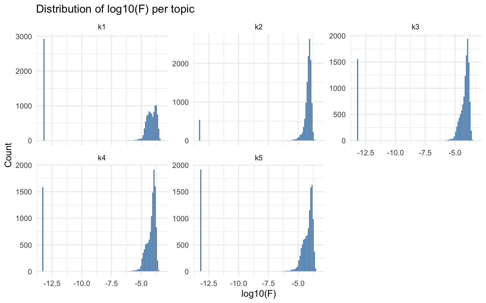
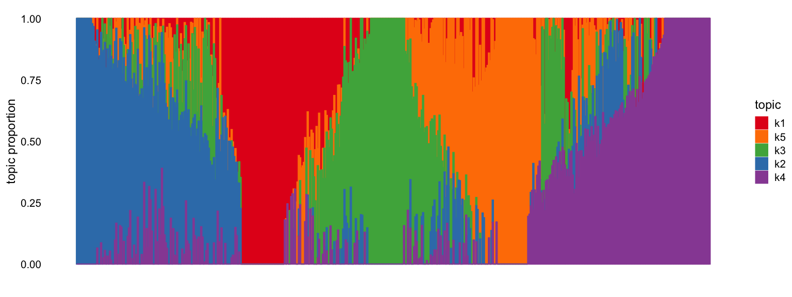
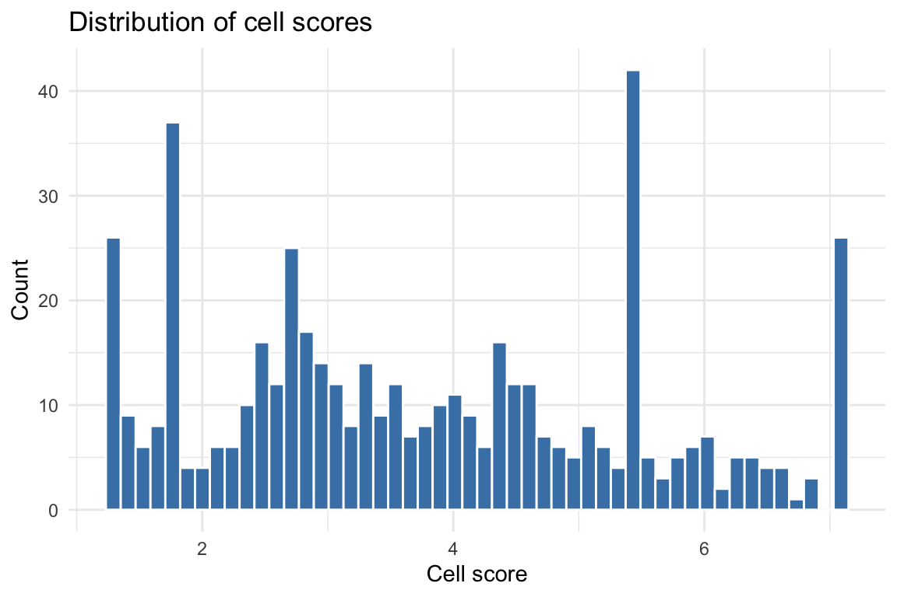
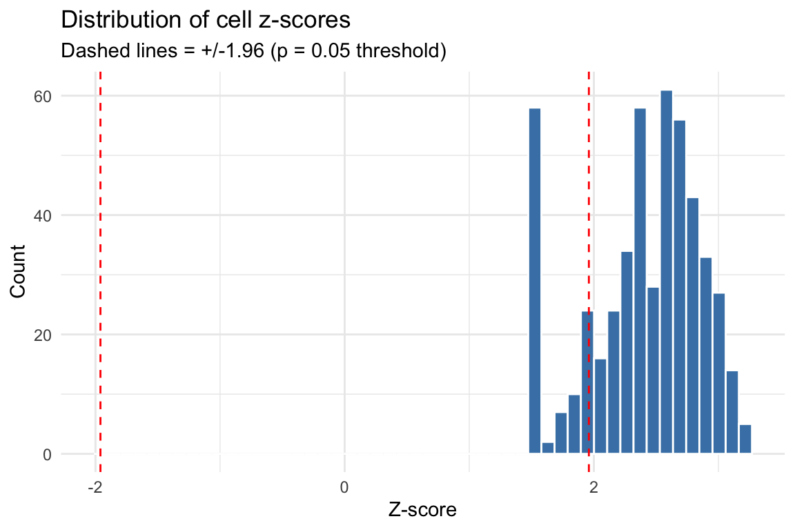
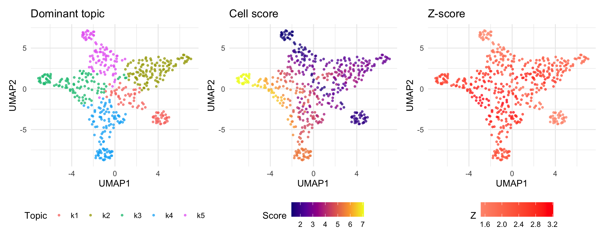

Step-by-Step Tutorial
2026-03-29
StepByStep.RmdOverview
scads (Single-Cell
ATAC-seq Disease
Scoring) computes per-cell disease relevance scores by
combining single-cell chromatin accessibility data with GWAS summary
statistics. The pipeline has four main steps:
| Step | What it does | Typical runtime | Peak memory |
|---|---|---|---|
| 1. fastTopics | Fits a topic model on the count matrix, identifies topic-specific peaks via differential expression, and computes a GC-content baseline correction. | ~1 min (500 cells, 13K peaks, 5 topics) | ~650 MB |
| 2. Topic annotations | Converts significant peaks per topic into BED files for S-LDSC. | < 10 sec | Negligible |
| 3. S-LDSC | Runs stratified LD score regression for each topic using the baseline LD v2.2 model. This is the most time-consuming step. | ~10 min per topic per chromosome (sequential) | ~300 MB per topic (Python) |
| 4. Cell scores | Combines S-LDSC enrichment estimates with cell-level topic loadings to produce a per-cell disease score. | < 10 sec | ~650 MB |
Note on runtime: The times above were measured on a MacBook Pro (M3 Max, 36 GB RAM) using the demo dataset (500 cells, 12,971 peaks on chr10, 5 topics). A full-genome analysis (22 chromosomes) will take proportionally longer for Step 3. Larger datasets (more cells or peaks) will increase Step 1 runtime.
Prerequisites
Before running this tutorial, make sure you have completed all installation steps described in the README:
-
polyFUN and LDSC are cloned and
the
polyfunconda environment is set up (Python 3.11, withbitarray<3andbedtoolsinstalled). - scads R package is installed with all dependencies.
- S-LDSC reference data has been downloaded (see below).
Download S-LDSC reference data
scads requires reference files from the S-LDSC baseline
LD model. Download and extract them into a local directory (e.g.,
~/LDSCORE/). All files are available from Zenodo.
Disk usage: The compressed downloads total ~1 GB. After extraction, the reference data requires ~4 GB of disk space.
# Create a directory for the reference data
mkdir -p ~/LDSCORE
# Download reference files from Zenodo (~1 GB total)
cd ~/LDSCORE
curl -fSL -o 1000G_Phase3_plinkfiles.tgz \
"https://zenodo.org/records/10515792/files/1000G_Phase3_plinkfiles.tgz?download=1" # 275 MB
curl -fSL -o 1000G_Phase3_baselineLD_v2.2_ldscores.tgz \
"https://zenodo.org/records/10515792/files/1000G_Phase3_baselineLD_v2.2_ldscores.tgz?download=1" # 645 MB
curl -fSL -o 1000G_Phase3_frq.tgz \
"https://zenodo.org/records/10515792/files/1000G_Phase3_frq.tgz?download=1" # 82 MB
curl -fSL -o 1000G_Phase3_weights_hm3_no_MHC.tgz \
"https://zenodo.org/records/10515792/files/1000G_Phase3_weights_hm3_no_MHC.tgz?download=1" # 12 MB
curl -fSL -o hm3_no_MHC.list.txt \
"https://zenodo.org/records/10515792/files/hm3_no_MHC.list.txt?download=1" # 12 MB
# Extract archives
tar -xzf 1000G_Phase3_plinkfiles.tgz
tar -xzf 1000G_Phase3_frq.tgz
tar -xzf 1000G_Phase3_weights_hm3_no_MHC.tgz
# The baseline LD archive extracts files directly (not into a subdirectory),
# so create one first:
mkdir -p 1000G_Phase3_baselineLD_v2.2_ldscores
tar -xzf 1000G_Phase3_baselineLD_v2.2_ldscores.tgz -C 1000G_Phase3_baselineLD_v2.2_ldscores
# (Optional) Remove the .tgz files to free ~1 GB of disk space
# rm -f *.tgzAfter extraction, you should have the following directory structure:
~/LDSCORE/
├── 1000G_EUR_Phase3_plink/ # 1000G.EUR.QC.{1..22}.{bed,bim,fam}
├── 1000G_Phase3_baselineLD_v2.2_ldscores/ # baselineLD.{1..22}.{annot.gz,l2.ldscore.gz,...}
├── 1000G_Phase3_frq/ # 1000G.EUR.QC.{1..22}.frq
├── 1000G_Phase3_weights_hm3_no_MHC/ # weights.hm3_noMHC.{1..22}.l2.ldscore.gz
└── hm3_no_MHC.list.txtStart an R session
Activate the polyfun conda environment
before starting R. This ensures that
python3 (called internally by scads) resolves
to the environment with the required Python packages (including
ldsc, polyfun, bedtools,
bitarray<3).
Load the scads package:
library(scads)
library(data.table)
library(ggplot2)Load example data
scads ships with a small demo dataset:
-
demo_count_matrix: A sparse peak-by-cell count matrix (12,971 peaks on chr10 x 500 cells) from scATAC-seq data. -
SIM_sumstats_chr10.txt.gz: Simulated GWAS summary statistics for chromosome 10.
# Load demo peak-by-cell count matrix
data("demo_count_matrix")
# Examine the dataset
cat("Dimensions (peaks x cells):", dim(demo_count_matrix), "\n")
#> Dimensions (peaks x cells): 12971 500
cat("Matrix class:", class(demo_count_matrix), "\n")
#> Matrix class: dgCMatrix
cat("Non-zero entries:", length(demo_count_matrix@x), "\n")
#> Non-zero entries: 521704
cat("Sparsity:", round(1 - length(demo_count_matrix@x) / prod(dim(demo_count_matrix)), 4), "\n")
#> Sparsity: 0.9196
demo_count_matrix[1:5, 1:5]
#> 5 x 5 sparse Matrix of class "dgCMatrix"
#>
#> chr10:8380739-8381239 . . . . .
#> chr10:131742591-131743091 . . . . 1
#> chr10:74486605-74487105 . . 1 . .
#> chr10:42737563-42738063 . . . . .
#> chr10:88092916-88093416 . . . . .The count matrix is a sparse matrix where rows are genomic peaks (in
chr:start-end format) and columns are cells. Most entries
are zero, which is typical for scATAC-seq data.
Load the example GWAS summary statistics:
data_file <- system.file("extdata", "SIM_sumstats_chr10.txt.gz", package = "scads")
sumstats <- fread(data_file, header = TRUE)
cat("Summary statistics dimensions:", dim(sumstats), "\n")
#> Summary statistics dimensions: 292171 9
cat("Columns:", paste(names(sumstats), collapse = ", "), "\n")
#> Columns: chr, pos, beta, se, a0, a1, snp, pval, zscore
head(sumstats)
#> chr pos beta se a0 a1 snp pval
#> <int> <int> <num> <num> <char> <char> <char> <num>
#> 1: 10 88766 0.05890450 0.02166930 T C rs55896525 0.0065637
#> 2: 10 90127 0.00707272 0.01724490 T C rs185642176 0.6817090
#> 3: 10 90164 0.00943048 0.01800330 G C rs141504207 0.6004070
#> 4: 10 94426 -0.00194658 0.00975979 T C rs10904045 0.8419120
#> 5: 10 95074 -0.00011268 0.00960219 A G rs6560828 0.9906370
#> 6: 10 95662 -0.01198410 0.01025610 C G rs35849539 0.2426170
#> zscore
#> <num>
#> 1: 2.71833885
#> 2: 0.41013401
#> 3: 0.52381952
#> 4: -0.19944896
#> 5: -0.01173482
#> 6: -1.16848510The summary statistics file must contain columns: chr,
pos, beta, se, a0
(ref allele), a1 (alt allele), snp (rsID),
pval, and zscore.
Configure paths
Set the paths to match your local environment. You need to specify:
-
polyfun_d/ldsc_d: where polyFUN and LDSC are cloned. -
ldscore_dir: where the S-LDSC reference data was downloaded. -
output_dir: where scads will write its results.
# -- User-specific paths (edit these) -----------------------------------------
polyfun_d <- path.expand("~/polyfun/")
ldsc_d <- path.expand("~/ldsc/")
ldscore_dir <- path.expand("~/Desktop/Project_scads/LDSCORE/zenodo/")
output_dir <- path.expand("~/scads_output/")
# -- Reference data paths (derived from ldscore_dir) --------------------------
onekg_pref <- file.path(ldscore_dir, "1000G_EUR_Phase3_plink", "1000G.EUR.QC.")
baseline_pref <- file.path(ldscore_dir, "1000G_Phase3_baselineLD_v2.2_ldscores", "baselineLD.")
frq_pref <- file.path(ldscore_dir, "1000G_Phase3_frq", "1000G.EUR.QC.")
hm3_file <- file.path(ldscore_dir, "hm3_no_MHC.list.txt")
weights_pref <- file.path(ldscore_dir, "1000G_Phase3_weights_hm3_no_MHC", "weights.hm3_noMHC.")Verify that the key files exist before proceeding:
dir.create(output_dir, showWarnings = FALSE, recursive = TRUE)
stopifnot(
"polyfun ldsc.py not found" = file.exists(file.path(polyfun_d, "ldsc.py")),
"ldsc make_annot.py not found" = file.exists(file.path(ldsc_d, "make_annot.py")),
"1000G plink files not found" = file.exists(paste0(onekg_pref, "10.bim")),
"Baseline LD files not found" = file.exists(paste0(baseline_pref, "10.l2.ldscore.gz")),
"Frequency files not found" = file.exists(paste0(frq_pref, "10.frq")),
"HapMap3 SNP list not found" = file.exists(hm3_file),
"Weight files not found" = file.exists(paste0(weights_pref, "10.l2.ldscore.gz"))
)
cat("All paths verified.\n")
#> All paths verified.Set analysis parameters
count_matrix <- demo_count_matrix
n_topics <- 5 # number of topics to fit
n_sims <- 1000 # Monte Carlo samples for DE analysis
n_cores <- 8 # adjust to the number of cores available
bl_method <- "gc" # GC-content baseline correction (recommended)
bl_ct <- NULL # cell type for "estimate" baseline (not used here)
bl_peaks <- NULL # cell type peaks for "estimate" baseline (not used here)
sumstats_d <- dirname(data_file)
gwas_n <- 45087 # GWAS sample size
trait <- "SIM"
cont_topics <- FALSE # use binary (not continuous) topic annotationsBaseline method options
The baseline_method parameter controls how the null
hypothesis is set for differential expression testing in Step 1:
| Method | Description |
|---|---|
"gc" |
(Recommended) Fits a GC-content-dependent baseline using an EM algorithm with a Poisson mixture model. Accounts for GC bias in chromatin accessibility. |
"constant" |
Uses a fixed small constant (1e-7) as baseline. Simple
but does not account for GC bias. |
"average" |
Computes a genome-wide average accessibility rate. |
"estimate" |
Estimates background from a reference cell type’s non-overlapping
peaks. Requires bl_celltype and
bl_celltype_peak_file. |
Running the pipeline step by step
While scads() can run the entire pipeline in one call,
this tutorial walks through each step individually to show intermediate
results. The scads() wrapper calls these same functions
internally and supports checkpointing via
save_intermediates = TRUE and
resume_from_step.
Note: This tutorial runs on chromosome 10 only (
chrs = 10) to keep runtime short (~50 min total). For a real analysis, usechrs = 1:22.
Step 1: Fit topic model with fastTopics
What this step does:
- Transposes the count matrix (peaks x cells -> cells x peaks) for fastTopics.
- Fits a Poisson NMF topic model with
ktopics usingfastTopics::fit_topic_model(). - Computes a GC-content baseline correction for each topic (if
baseline_method = "gc"). - Runs differential expression analysis to identify topic-specific peaks.
- Applies FDR correction and binarizes peak assignments.
Runtime: ~1 min for the demo dataset (500 cells, 12,971 peaks, 5 topics). Memory: ~650 MB peak.
out1_cache <- file.path(output_dir, "run_fastTopics_res.rds")
if (file.exists(out1_cache)) {
cat("Loading cached Step 1 results from", out1_cache, "\n")
out1 <- readRDS(out1_cache)
} else {
set.seed(1234)
# Transpose: scads expects peaks-by-cells, but fastTopics needs cells-by-peaks
count_matrix_t <- Matrix::t(count_matrix)
cat("Input dimensions (cells x peaks):", dim(count_matrix_t), "\n")
# Run fastTopics
t1_start <- Sys.time()
out1 <- run_fastTopics(
count_matrix = count_matrix_t,
nTopics = n_topics,
n_s = n_sims,
n_c = n_cores,
baseline_method = bl_method,
bl_celltype_cells = bl_ct,
bl_celltype_peak_file = bl_peaks,
fdr_cutoff = 0.05,
outdir = output_dir,
genome = "hg19"
)
t1_end <- Sys.time()
cat("\nStep 1 runtime:", round(difftime(t1_end, t1_start, units = "secs")), "seconds\n")
# Save intermediate results
saveRDS(out1, out1_cache)
}
#> Loading cached Step 1 results from /Users/siming/scads_output//run_fastTopics_res.rdsExamine Step 1 results:
# Topic model dimensions
cat("Factor matrix F (peaks x topics):", dim(out1$Fmat), "\n")
#> Factor matrix F (peaks x topics): 12971 5
cat("Loading matrix L (cells x topics):", dim(out1$Lmat), "\n")
#> Loading matrix L (cells x topics): 500 5
cat("Binary peak matrix P (peaks x topics):", dim(out1$Pmat), "\n")
#> Binary peak matrix P (peaks x topics): 12971 5
# Number of significant peaks per topic (after FDR correction)
cat("\nSignificant peaks per topic:\n")
#>
#> Significant peaks per topic:
print(colSums(out1$Pmat))
#> k1 k2 k3 k4 k5
#> 3995 8380 6827 5417 6309The binary peak matrix Pmat indicates which peaks are
significantly enriched in each topic (1 = significant at FDR < 0.05).
These will be used as topic annotations for S-LDSC.
Step 2: Generate topic annotation BED files
What this step does:
Converts the binary peak-topic assignments (Pmat) into
BED files for each topic. Each BED file contains the genomic coordinates
of peaks assigned to that topic, which S-LDSC uses as a custom
annotation.
Runtime: < 10 seconds. Memory: Negligible.
beddir_cache <- file.path(output_dir, "beddir_list.rds")
if (file.exists(beddir_cache)) {
cat("Loading cached Step 2 results from", beddir_cache, "\n")
beddir_list <- readRDS(beddir_cache)
} else {
t2_start <- Sys.time()
beddir_list <- get_annot_beds(topics_res = out1, output_dir = output_dir)
t2_end <- Sys.time()
cat("Step 2 runtime:", round(difftime(t2_end, t2_start, units = "secs"), 1), "seconds\n")
# Save for checkpointing
saveRDS(beddir_list, beddir_cache)
}
#> Loading cached Step 2 results from /Users/siming/scads_output//beddir_list.rdsStep 3: Run S-LDSC per topic
What this step does:
For each topic annotation, this step runs the full S-LDSC pipeline:
-
Munge summary statistics – converts GWAS sumstats
to the format expected by LDSC (parquet file via
munge_polyfun_sumstats.py). -
Create annotation – for each chromosome, marks
which 1000G SNPs fall within topic peaks (via
make_annot.py). -
Compute LD scores – calculates LD scores for the
custom annotation (via
ldsc.py --l2). -
Heritability estimation – runs partitioned
heritability analysis combining the custom annotation with the baseline
LD v2.2 model (via
ldsc.py --h2).
The key output is the enrichment estimate per topic: how much heritability is concentrated in the topic’s peaks relative to their size.
Runtime: ~10 min per topic per chromosome. With 5 topics on chr10 running sequentially, expect ~50 min total. Memory: ~300 MB per topic (Python processes).
# Check which topics already have S-LDSC results
t3_start <- Sys.time()
all_done <- all(vapply(seq_along(beddir_list), function(i) {
file.exists(file.path(beddir_list[[i]], "results", paste0(trait, ".results")))
}, logical(1)))
if (all_done) {
cat("All S-LDSC results found — skipping Step 3.\n")
} else {
for (i in seq_along(beddir_list)) {
res_file <- file.path(beddir_list[[i]], "results", paste0(trait, ".results"))
if (file.exists(res_file)) {
cat(sprintf("--- Topic %d already done, skipping ---\n", i))
next
}
cat(sprintf("\n--- Running S-LDSC for topic %d of %d ---\n", i, length(beddir_list)))
run_sldsc(
chrs = 10, # chr10 only for this tutorial
polyfun_path = polyfun_d,
ldsc_path = ldsc_d,
sumstats_path = sumstats_d,
n = gwas_n,
trait = trait,
onekg_path = onekg_pref,
bed_dir = beddir_list[[i]],
baseline_dir = baseline_pref,
frqfile_pref = frq_pref,
hm3_snps = hm3_file,
weights_pref = weights_pref,
out_dir = beddir_list[[i]]
)
}
}
#> All S-LDSC results found — skipping Step 3.
t3_end <- Sys.time()
cat("\nStep 3 total runtime:", round(difftime(t3_end, t3_start, units = "secs"), 1), "seconds\n")
#>
#> Step 3 total runtime: 0 secondsThe enrichment results per topic are displayed after Step 4 (which reads and processes the S-LDSC output files).
Step 4: Calculate cell scores
What this step does:
Combines the S-LDSC enrichment estimates with cell-level topic loadings to produce a per-cell disease relevance score:
- Reads S-LDSC results for each topic and applies adaptive shrinkage (ASH) to stabilize enrichment estimates.
- Computes a weighted score per cell:
cs_i = sum(L_ik * a_k * e_k) / sum(L_ik * a_k), whereL_ikis the cell’s loading on topick,a_kis the number of peaks in topick, ande_kis the (shrunk) enrichment estimate. - Computes z-scores and p-values accounting for correlation between topic annotations.
Runtime: < 10 seconds. Memory: ~650 MB (due to correlation matrix computation).
cs_cache <- file.path(output_dir, "cs_res.rds")
if (file.exists(cs_cache)) {
cat("Loading cached Step 4 results from", cs_cache, "\n")
cs_res <- readRDS(cs_cache)
} else {
t4_start <- Sys.time()
cs_res <- get_cs(
topic_res = out1,
ldsc_res_dir = output_dir,
trait = trait,
nTopics = n_topics
)
t4_end <- Sys.time()
cat("Step 4 runtime:", round(difftime(t4_end, t4_start, units = "secs"), 1), "seconds\n")
# Save results
saveRDS(cs_res, cs_cache)
}
#> Loading cached Step 4 results from /Users/siming/scads_output//cs_res.rdsExamine Step 4 results:
cat("Cell score summary:\n")
#> Cell score summary:
print(summary(cs_res$cs))
#> Min. 1st Qu. Median Mean 3rd Qu. Max.
#> 1.291 2.472 3.544 3.780 5.172 7.089
cat("\nZ-score summary:\n")
#>
#> Z-score summary:
print(summary(as.numeric(cs_res$z_cell)))
#> Min. 1st Qu. Median Mean 3rd Qu. Max.
#> 1.500 2.155 2.503 2.401 2.738 3.216
cat("\nNumber of significant cells (p < 0.05):", sum(cs_res$p_cell < 0.05), "\n")
#>
#> Number of significant cells (p < 0.05): 413
cat("Number of significant cells (p < 0.01):", sum(cs_res$p_cell < 0.01), "\n")
#> Number of significant cells (p < 0.01): 220
cat("\nASH-shrunk enrichment estimates:\n")
#>
#> ASH-shrunk enrichment estimates:
print(cs_res$ash_res$PosteriorMean)
#> [1] 1.804256 2.697942 7.089065 5.443484 1.291199Understanding the output:
-
cs: The per-cell disease score. Higher values indicate greater disease relevance based on the cell’s chromatin accessibility profile. -
z_cell: Z-score for each cell, accounting for variance in enrichment estimates and correlation between topic annotations. -
p_cell: Two-sided p-value for each cell’s score. -
ldsc_res_table: Raw S-LDSC results per topic. -
ash_res: Enrichment estimates after adaptive shrinkage (more stable). -
cs_dat: Intermediate values (M_i,N_i) used in score computation.
Higher cell scores indicate cells whose chromatin accessibility profiles overlap more strongly with disease-associated regions. Cells dominated by topics with high enrichment will receive higher scores.
Visualizing results
After running the pipeline, it is important to inspect intermediate and final results. This section shows diagnostic plots for each stage.
Topic model diagnostics
Distribution of factor loadings (Fmat)
The factor loading matrix Fmat (peaks x topics) contains
the Poisson rate parameters for each peak in each topic. Examining the
distribution of log10(F) per topic reveals whether the model separates
foreground (high F) from background (low F) peaks.
Fmat <- out1$Fmat
# Histogram of log10(Fmat) per topic
fmat_df <- do.call(rbind, lapply(1:ncol(Fmat), function(k) {
data.frame(
log10F = log10(Fmat[, k]),
topic = paste0("k", k)
)
}))
ggplot(fmat_df, aes(x = log10F)) +
geom_histogram(bins = 100, fill = "steelblue", color = "white", linewidth = 0.1) +
facet_wrap(~topic, scales = "free_y") +
labs(title = "Distribution of log10(F) per topic",
x = "log10(F)", y = "Count") +
theme_minimal()
Structure plot
The fastTopics structure plot shows how cells are
distributed across topics. Each vertical bar represents a cell, colored
by its topic proportions (from the Lmat loading matrix).
Cells dominated by a single topic form clusters.
fastTopics::structure_plot(out1$fastTopics_fit)
#> Running tsne on 500 x 5 matrix.
#> Read the 500 x 5 data matrix successfully!
#> Using no_dims = 1, perplexity = 100.000000, and theta = 0.100000
#> Computing input similarities...
#> Building tree...
#> Done in 0.06 seconds (sparsity = 0.769136)!
#> Learning embedding...
#> Iteration 50: error is 48.722003 (50 iterations in 0.03 seconds)
#> Iteration 100: error is 48.722003 (50 iterations in 0.03 seconds)
#> Iteration 150: error is 48.722003 (50 iterations in 0.03 seconds)
#> Iteration 200: error is 48.722003 (50 iterations in 0.03 seconds)
#> Iteration 250: error is 48.722003 (50 iterations in 0.03 seconds)
#> Iteration 300: error is 0.446991 (50 iterations in 0.03 seconds)
#> Iteration 350: error is 0.440582 (50 iterations in 0.03 seconds)
#> Iteration 400: error is 0.440534 (50 iterations in 0.03 seconds)
#> Iteration 450: error is 0.440535 (50 iterations in 0.03 seconds)
#> Iteration 500: error is 0.440536 (50 iterations in 0.03 seconds)
#> Iteration 550: error is 0.440536 (50 iterations in 0.03 seconds)
#> Iteration 600: error is 0.440536 (50 iterations in 0.03 seconds)
#> Iteration 650: error is 0.440536 (50 iterations in 0.03 seconds)
#> Iteration 700: error is 0.440536 (50 iterations in 0.04 seconds)
#> Iteration 750: error is 0.440536 (50 iterations in 0.03 seconds)
#> Iteration 800: error is 0.440536 (50 iterations in 0.03 seconds)
#> Iteration 850: error is 0.440536 (50 iterations in 0.03 seconds)
#> Iteration 900: error is 0.440536 (50 iterations in 0.03 seconds)
#> Iteration 950: error is 0.440536 (50 iterations in 0.03 seconds)
#> Iteration 1000: error is 0.440536 (50 iterations in 0.04 seconds)
#> Fitting performed in 0.66 seconds.
#> Warning: `aes_string()` was deprecated in ggplot2 3.0.0.
#> ℹ Please use tidy evaluation idioms with `aes()`.
#> ℹ See also `vignette("ggplot2-in-packages")` for more information.
#> ℹ The deprecated feature was likely used in the fastTopics package.
#> Please report the issue at
#> <https://github.com/stephenslab/fastTopics/issues>.
#> This warning is displayed once per session.
#> Call `lifecycle::last_lifecycle_warnings()` to see where this warning was
#> generated.
S-LDSC enrichment summary
Enrichment bar plot
Visualizing enrichment estimates with error bars helps identify which topics carry disease signal. Topics with positive enrichment (and small standard error) are the informative ones.
ldsc_tab <- cs_res$ldsc_res_table
# Add ASH-shrunk estimates
ldsc_tab$ASH_Enrichment <- cs_res$ash_res$PosteriorMean
# Bar plot of enrichment per topic
ggplot(ldsc_tab, aes(x = Category, y = Enrichment)) +
geom_col(fill = "steelblue", width = 0.6) +
geom_errorbar(aes(ymin = Enrichment - 1.96 * Enrichment_std_error,
ymax = Enrichment + 1.96 * Enrichment_std_error),
width = 0.2) +
geom_hline(yintercept = 1, linetype = "dashed", color = "red") +
labs(title = "S-LDSC enrichment per topic",
subtitle = "Dashed line = no enrichment (1.0). Error bars = 95% CI.",
x = "Topic", y = "Enrichment") +
theme_minimal()
S-LDSC results table
# Full results table
print(ldsc_tab[, c("Category", "Prop._SNPs", "Prop._h2", "Enrichment",
"Enrichment_std_error", "ASH_Enrichment")])
#> Category Prop._SNPs Prop._h2 Enrichment Enrichment_std_error ASH_Enrichment
#> 1 k1 0.014473 0.12158 8.4002 4.8179 1.804256
#> 2 k2 0.030417 0.20225 6.6492 2.8804 2.697942
#> 3 k3 0.024685 0.26406 10.6970 3.7634 7.089065
#> 4 k4 0.019800 0.19575 9.8865 3.8306 5.443484
#> 5 k5 0.022393 0.13373 5.9718 3.3137 1.291199Interpreting enrichment: Enrichment > 1 means heritability is concentrated in a topic’s peaks more than expected by chance. Topics with enrichment significantly > 1 (confidence interval not crossing 1) indicate disease-relevant chromatin programs. After adaptive shrinkage (ASH), the estimates are stabilized and used to weight cell scores in Step 4.
Cell score distribution
Histogram of cell scores
cs_df <- data.frame(cs = cs_res$cs)
ggplot(cs_df, aes(x = cs)) +
geom_histogram(bins = 50, fill = "steelblue", color = "white") +
labs(title = "Distribution of cell scores",
x = "Cell score", y = "Count") +
theme_minimal()
Z-score distribution
The z-scores account for variance in enrichment estimates and correlation between topic annotations. Under the null (no disease signal), z-scores should be approximately standard normal.
z_df <- data.frame(z = as.numeric(cs_res$z_cell))
z_df <- z_df[is.finite(z_df$z), , drop = FALSE]
ggplot(z_df, aes(x = z)) +
geom_histogram(bins = 50, fill = "steelblue", color = "white") +
geom_vline(xintercept = c(-1.96, 1.96), linetype = "dashed", color = "red") +
labs(title = "Distribution of cell z-scores",
subtitle = "Dashed lines = +/-1.96 (p = 0.05 threshold)",
x = "Z-score", y = "Count") +
theme_minimal()
UMAP visualization
UMAP provides a 2D embedding of cells based on the topic loading
matrix (Lmat). Coloring cells by their disease score
reveals whether disease-relevant cells cluster together.
if (!requireNamespace("uwot", quietly = TRUE)) {
message("Install 'uwot' for UMAP: install.packages('uwot')")
} else {
library(patchwork)
# Compute UMAP from topic loadings
set.seed(42)
umap_coords <- uwot::umap(out1$Lmat, n_neighbors = 350, min_dist = 0.8)
umap_df <- data.frame(
UMAP1 = umap_coords[, 1],
UMAP2 = umap_coords[, 2],
cell_score = cs_res$cs,
z_score = as.numeric(cs_res$z_cell)
)
# Color by dominant topic
dominant_topic <- paste0("k", apply(out1$Lmat, 1, which.max))
umap_df$topic <- dominant_topic
p3 <- ggplot(umap_df, aes(x = UMAP1, y = UMAP2, color = topic)) +
geom_point(size = 0.8, alpha = 0.7) +
labs(title = "Dominant topic", color = "Topic") +
theme_minimal() + theme(legend.position = "bottom")
# Color by cell score
p1 <- ggplot(umap_df, aes(x = UMAP1, y = UMAP2, color = cell_score)) +
geom_point(size = 0.8, alpha = 0.7) +
scale_color_viridis_c(option = "C") +
labs(title = "Cell score", color = "Score") +
theme_minimal() + theme(legend.position = "bottom")
# Color by z-score
p2 <- ggplot(umap_df, aes(x = UMAP1, y = UMAP2, color = z_score)) +
geom_point(size = 0.8, alpha = 0.7) +
scale_color_gradient2(low = "blue", mid = "grey90", high = "red", midpoint = 0) +
labs(title = "Z-score", color = "Z") +
theme_minimal() + theme(legend.position = "bottom")
# Combine plots
p3 + p1 + p2 + plot_layout(ncol = 3)
}
Note: Cells dominated by topics with high enrichment will appear as “hot spots” on the score UMAP. The z-score UMAP highlights cells whose scores are statistically significant after accounting for estimation uncertainty and topic correlation.
Output files
After running the pipeline, output_dir contains:
output_dir/
├── run_fastTopics_res.rds # Step 1 results (fastTopics model + DE)
├── fasTopics_fit.rds # Raw fastTopics model fit
├── count_mat_tp.rds # Pseudobulk count matrix (peaks x topics)
├── beddir_list.rds # Step 2 results (BED directory paths)
├── cs_res.rds # Step 4 results (cell scores)
├── k1_output/ # Topic 1
│ ├── k1_annotations.bed # BED file of topic peaks
│ ├── annotations/SIM/ # S-LDSC annotation files
│ │ └── SIM.10.{annot.gz,l2.ldscore.gz,...}
│ ├── results/ # S-LDSC results
│ │ └── SIM.{results,log}
│ └── SIM_munged_sumstats.parquet # Munged GWAS sumstats
├── k2_output/ # Topic 2 (same structure)
│ └── ...
└── k5_output/ # Topic 5
└── ...The result list returned by scads() has two
elements:
-
out1: The fitted fastTopics model, including:-
fastTopics_fit: The raw topic model object -
Fmat: Factor loadings matrix (peaks x topics) -
Lmat: Topic proportions matrix (cells x topics) -
Pmat: Binary peak assignments (peaks x topics) -
de_res: Full differential expression results (z-scores, log-fold changes) -
baseline: The GC-content baseline used for DE testing
-
-
cs_res: The per-cell disease scores, including:-
cs: Cell score vector -
z_cell: Z-scores per cell -
p_cell: P-values per cell -
ldsc_res_table: S-LDSC results per topic -
ash_res: ASH-stabilized enrichment estimates -
cs_dat: IntermediateM_iandN_ivalues
-
Troubleshooting
Common issues
| Issue | Solution |
|---|---|
"sortBed" does not appear to be installed |
Install bedtools in your conda env:
conda install -n polyfun -c bioconda bedtools
|
TypeError: float() argument must be a string or a real number, not 'bitarray.decodeiterator' |
Downgrade bitarray: pip install 'bitarray<3'
|
could not find function "width" |
Make sure GenomicRanges is loaded (scads handles this
internally) |
| Paths with spaces break S-LDSC | scads v0.2.0+ handles this via shQuote(). If using
older versions, use symlinks. |
| S-LDSC takes too long | Use chrs = 10 for testing. For production, run on a
cluster with mc.cores. |